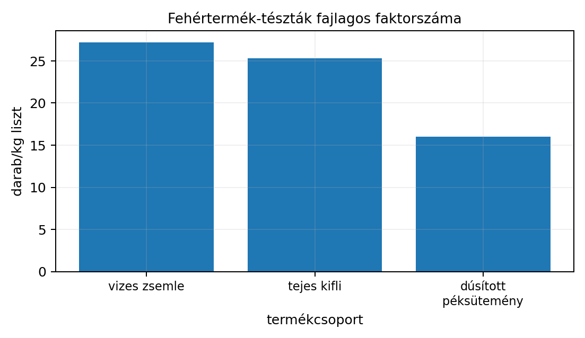

A péksütemény- és finompékáru-gyártás ritkán indul 100 kg lisztből. A munkahelyi gyakorlatban a rendelés darabszámban érkezik: „600 db vizes zsemle, 400 db tejes kifli, 150 db dúsított péksütemény”. Ilyenkor a péknek gyorsan kell tudnia, mennyi lisztet mérjen ki, mennyi tésztát dagasszon, és hány dagasztásra van szüksége. A receptúrák százalékos alakja ezt önmagában nehézkesen adná meg, mert a lisztre vetített százalékból előbb a teljes tésztamennyiséget kellene kiszámolni, majd a darabtömeg alapján visszaosztani. A fehértermékeknél ezért használják a faktorszámot, amely a darabszám és a lisztfelhasználás közötti kapcsolatot rögzíti.
A következő oszlopdiagram három eltérő termékcsoport tanulási példaként megadott faktorszámait hasonlítja össze. A vizes tésztából készült zsemle fajlagosan több darabot ad 1 kg lisztből, a dúsított péksütemény viszont nagyobb feladási tömegű, ezért kisebb a faktorszáma.

Az ábra számszerű üzenete: minél nagyobb egy darab tészta feladási tömege, annál kevesebb darabot lehet feladni ugyanabból az 1 kg lisztből készült tésztamennyiségből. A vizes zsemle kisebb, a dúsított péksütemény nagyobb tésztadarab, ezért a faktor jól mutatja a különbséget.
Definíció. Faktorszám. A sütőipari gyakorlatban a faktorszám azt mutatja meg, hogy 1 kg felhasznált lisztből hány darab, az adott anyagnorma szerinti, azonos feladási tömegű terméket lehet feladni és kisütni. Mértékegysége: db/kg liszt. (Ellenőrizendő: az aktuális képzési anyag és az üzemi gyakorlat által használt definíció.)
Képlete:
ahol:
A faktorszám a tésztahozamból és a feladási tömegből közvetlenül is kifejezhető. A a Tésztahozam, termékhozam, kihozatal és veszteségek alfejezet tésztahozama 1 kg lisztre vetítve: (pl. 158 kg/100 kg liszt, azaz 1,58 kg/kg). Nem azonos a termékhozammal (kihozatallal) és a TA-val. A faktorszám jele ; ne keverd a Fajlagos lisztfelhasználás és lisztkeverési számítások mennyiségével (kg liszt/100 kg termék). Jelölje:
a tészta tömegét 1 kg lisztre vetítve, kg/kg-ban. Ha minden termékhez tömegű nyers tésztadarabot osztunk, akkor a darabszám:
Ebből a faktorszám:
A faktorszám tehát nem keverendő össze a tésztahozam számszerű értékével. A tésztahozam kg tészta/kg liszt mennyiség, a faktor db/kg liszt mennyiség.
Szabály. Faktoros alapösszefüggések. A három leggyakrabban használt alak:
A 2. és 3. alak ugyanazt az eredményt adja, mert .
A fehértermékeket a tészta összetétele és a feladási tömeg szerint érdemes külön kezelni. A következő táblázatban tanulási példaként szerepelnek jellemző értékek; az üzemi anyagnorma ettől termékenként, lisztenként és gépenként eltérhet. (Ellenőrizendő: az üzem gyártmánylapja, technológiai lapja.)
| Termékcsoport | Jellemző termék | Tésztahozam (kg/kg liszt) | Feladási tömeg (g/db) | Késztömeg (g/db) | Faktorszám (db/kg) |
|---|---|---|---|---|---|
| vizes tészta | vizes zsemle | 1,58 | 58 | 50 | 27,2 |
| tejes tészta | tejes kifli | 1,62 | 64 | 56 | 25,3 |
| dúsított tészta | dúsított péksütemény (pl. kalácskifli, briós) | 1,70 | 106 | 92 | 16,0 |
A táblázatból jól látható, hogy a faktor értéke a tésztahozam osztva a feladási tömeggel. Például a vizes zsemlénél:
A vizes tészta jellemzően lisztből, vízből, élesztőből és sóból készül, zsiradékot, cukrot, tojást nem vagy csak kis mennyiségben tartalmaz. A feladási tömege általában kicsi, ezért a faktorszáma magas.
A tejes tészta vizet és tejet vagy tejport is tartalmaz, esetleg kis zsiradékkal. A tésztahozam gyakran valamivel nagyobb, mint a vizes tésztáé, de a feladási tömeg is nagyobb lehet.
A dúsított tészta sok zsiradékot, cukrot, tojást, tejet tartalmaz. A tésztahozama magas lehet, a termékek feladási tömege azonban lényegesen nagyobb, ezért a faktorszáma alacsonyabb.
Továbbvitt eredmény. A faktorszámos számítási sémát használjuk a Nyersanyagok helyettesítésének számításai alfejezetben, ha az összetétel változása miatt új faktort kell meghatározni, valamint az A péksütemények jellemzése, csoportnormái és vezértermékei alfejezetben a termékcsoportok anyagnormáinak értelmezéséhez.
A fehértermékek esetében az anyagnorma nemcsak a lisztre vetített százalékos receptúrát tartalmazza, hanem a darabra vetített adatokat is. A gyártmánylap vagy technológiai lap jellemzően az alábbi oszlopokat tartalmazza:
A faktorizálás éppen ezért nem új laboratóriumi vizsgálat, hanem a meglévő anyagnorma darabszámra való átszámítása. A termelésben a rendelést darabszámban kapják, ezért a gyártmánylapon készen megadott faktor gyorsítja a napi anyagszükséglet-számítást.
Előírás. A sütőipari termékek gyártásához az üzemnek gyártmánylappal vagy technológiai lappal kell rendelkeznie, amely rögzíti a felhasznált anyagok mennyiségét, a feladási tömeget, a késztermék tömegét és a minőségi követelményeket. A Magyar Élelmiszerkönyv sütőipari termékekre vonatkozó előírásai termékcsoportonként adnak keretet. (Ellenőrizendő: hatályos MÉE-előírás, üzemi gyártmánylap-minta.)
Allergén. Ha a fehértermék tejet, tojást, vajat, tejszínt, dióféléket vagy más jelölésköteles anyagot tartalmaz, az anyagnorma lapon és a gyártási dokumentációban is fel kell tüntetni. A faktorszám számítása nem mentesít az allergénjelölési és keresztszennyeződés-megelőzési kötelezettség alól; ezt a Allergének kezelése a pékségben alfejezet tárgyalja.
HACCP. A lemért tészta tömegét és a darabszámot a gyártás megkezdése előtt és osztás után is ellenőrizni kell. A téves anyagszükséglet-számításból eredő tömegeltérés minőségi eltérést okoz, ezért a mérési pontokat az üzemi HACCP-terv szerint kell dokumentálni. (Ellenőrizendő: az üzem HACCP-terve.)
A mindennapi munkában a következő lépéseket érdemes követni:
vagy ha ismerjük a feladási tömeget:
Adott: 600 db vizes zsemlét kell gyártani. A gyártmánylap szerint db/kg, kg/kg. (Tanulási példa, ellenőrizendő.)
Keresett: felhasználandó liszt, tészta és egy darab feladási tömege.
Számítás:
A feladási tömeg:
Ellenőrzés:
A tésztafelhasználás tehát 34,85 kg, a feladási tömeg kerekítve 58 g, de a pontos darabszámhoz 58,1 g-tal érdemes számolni.
Adott rendelés: 300 db vizes zsemle, 240 db tejes kifli, 120 db dúsított péksütemény. Az üzemi anyagnorma tanulási adatai a korábbi táblázat szerint: vizes zsemle db/kg, kg/kg; tejes kifli db/kg, kg/kg; dúsított péksütemény db/kg, kg/kg.
Zsemle:
Tejes kifli:
Dúsított péksütemény:
Összes liszt:
Összes tészta:
Ellenőrzés a feladási tömegekkel: zsemle 17,43 kg / 58,1 g ≈ 300 db, kifli 15,37 kg / 64,0 g ≈ 240 db, dúsított péksütemény 12,75 kg / 106,25 g ≈ 120 db.
Adott: reggelre 45 kg vizes tésztát dagasztottak. A zsemle anyagnormája szerint db/kg, kg/kg. Keresett: hány darabot lehet feladni, és mekkora feladási tömeget kell beállítani az osztógépen?
Számítás:
A készíthető darabszám:
Lefelé kerekítünk, mert a maradék nem ad teljes tömegű darabot.
A feladási tömeg:
Megjegyzés: az osztógép beállításánál a darabszámot általában egészre kerekítjük, ezért a feladási tömeget ezután pontosítani kell, hogy az összes tészta leosztásra kerüljön.
Egy kis pékségben a műszakkezdő pék a szombati rendelést kapja: 500 db tejes kifli, 350 db vizes zsemle és 100 db dúsított péksütemény. A hűtőben kevés tejes kifli tészta maradt éjszakára. A pék a gyártmánylap faktorait használva először kiszámítja, hogy a meglévő 8 kg tejes kifli tésztából hány darab készíthető, majd a hiányzó darabokhoz igazítja a friss dagasztást.
A meglévő 8 kg tésztából a tejes kifli esetében:
(lefelé kerekítve, mert a maradék nem ad teljes tömegű darabot).
A rendelt 500 darabból tehát még 376 darabot kell friss tésztából gyártani. A friss tésztához:
A pék így nem dagaszt feleslegesen, és a reggeli kiszállításkor sem lesz darabhiány. A számítást a gyártási füzetben rögzíti, hogy a nyomonkövethetőség és az esetleges reklamáció miatt visszakereshető legyen.
A faktorszámos számítás pontossága közvetlenül befolyásolja a késztermék tömegét és a rendelés teljesíthetőségét. A gyártás előtt ellenőrizni kell:
A tészta tömegének megengedett eltérése az üzemi gyártmánylap szerinti tűrésen belül legyen; tanulási példaként ±1–2% szokásos, de a pontos értéket az üzemi előírás adja. (Ellenőrizendő: az üzem gyártmánylapja, minőségirányítási utasítása.)
A késztömeget használják feladási tömegként. Ha a késztermék 50 g, de a feladási tömeg 58 g lenne, a tanuló 50 g tésztát oszt, ezért a termék sütés után 43–44 g lesz, azaz alulsúlyos. Megoldás: mindig a gyártmánylap feladási tömegét használjuk az osztáshoz.
A faktort és a tésztahozamot felcserélik. A zsemle faktorszáma 27,2 db/kg, tésztahozama 1,58 kg/kg. Ha valaki 600 db-hoz 600 db / 1,58 = 380 kg lisztet számol, irreálisan nagy tésztamennyiséget kap. Megoldás: a lisztigényt a faktorral, a tésztamennyiséget a tésztahozamot figyelembe véve számoljuk.
A tésztamennyiséget a liszt tömegével azonosítják. A tészta a liszten kívül vizet, élesztőt, sót és más anyagot is tartalmaz, ezért a tészta tömege mindig nagyobb, mint a liszt tömege. Megoldás: használjuk a szorzót.
Vegyes rendelésnél a faktorokat átlagolják. A vizes, tejes és dúsított termékek eltérő feladási tömegűek; egyetlen átlagfaktor hibás lisztigényt ad. Megoldás: termékenként külön számoljunk, majd összesítsünk.
A sütési-hűlési veszteséget rosszul vonják le. A faktor a darabszámra vonatkozik, ezért a veszteséget nem szabad közvetlenül a faktorból kivonni, ha az anyagnorma már a tésztahozam és a feladási tömeg alapján adja meg. Megoldás: a késztermék tömegét a feladási tömegből a sütési-hűlési veszteség egyszeri levonásával számoljuk, ahogyan a Tésztahozam, termékhozam, kihozatal és veszteségek alfejezetben tanultuk.
1. feladat (A)
Fogalmazza meg képlettel, hogyan számítjuk ki a szükséges lisztet a
rendelt darabszámból, ha a faktorszám adott.
2. feladat (A)
Egy pékség 840 db vizes zsemlét gyárt. Az anyagnorma szerint
db/kg,
kg/kg. Számolja ki: a szükséges lisztet, a szükséges tésztát és az egy
darabra jutó feladási tömeget.
3. feladat (B)
Rendelés: 500 db tejes kifli és 300 db dúsított péksütemény. Adatok:
tejes kifli
db/kg,
kg/kg; dúsított péksütemény
db/kg,
kg/kg. Termékenként határozza meg a liszt- és tésztamennyiséget, majd
adja meg az összes lisztet és tésztát.
4. feladat (B)
Egy termék tésztahozama 1,61 kg/kg, faktorszáma 26 db/kg. Mekkora a
feladási tömeg? Hány darabot lehet feladni 65 kg tésztából?
5. feladat (C)
Egy tanuló 1000 db zsemle gyártásához 1000 × 50 g = 50 kg lisztet
számol, mert a késztermék tömege 50 g. A zsemle faktor 27,2 db/kg,
tésztahozam 1,58 kg/kg. Mutassa be a hibát, és számítsa ki a helyes
liszt- és tésztamennyiséget.
6. feladat (D)
Egy pékség 250 db brióst készít. A gyártmánylap:
kg/kg,
db/kg, sütési-hűlési veszteség 13%. Határozza meg a szükséges lisztet, a
tésztamennyiséget, a feladási tömeget és a várható
késztermék-tömeget.
Önellenőrzés – válaszok
1. feladat megoldás
2. feladat megoldás
Liszt:
Tészta:
Feladási tömeg:
Ellenőrzés: 48,79 kg / 0,05809 kg/db ≈ 840 db.
3. feladat megoldás
Tejes kifli:
Dúsított péksütemény:
Összes liszt:
Összes tészta:
4. feladat megoldás
Feladási tömeg:
65 kg tésztából:
(lefelé kerekítve, mert a maradék nem ad teljes tömegű darabot).
5. feladat megoldás
A hiba az, hogy a tanuló a késztermék tömegét szorozta a darabszámmal, és az eredményt lisztnek tekintette. A 1000 db × 50 g = 50 kg valójában a késztermék össztömege lenne, nem a liszt. A lisztet a faktorból kell számolni.
A feladási tömeg:
Ellenőrzés: 58,08 kg / 0,0581 kg/db ≈ 1000 db.
6. feladat megoldás
Liszt:
Tészta:
Feladási tömeg:
Várható késztermék-tömeg:
Ellenőrzés: 19,08 kg tészta / 0,0764 kg/db ≈ 250 db.
A faktorszám a fehértermékek anyagnormájának darabra vetített mutatója: megadja, hogy 1 kg lisztből hány darab, azonos feladási tömegű terméket lehet feladni. Képlete , mértékegysége db/kg liszt. A tésztahozamból és a feladási tömegből kifejezve:
A mindennapi gyakorlatban a lisztigényt adja, a tésztamennyiséget pedig vagy . Vizes, tejes és dúsított tésztáknál a faktor eltérő, ezért vegyes rendelésnél termékenként kell számolni. A feladási tömeget kell használni, nem a késztermék tömegét. A faktoros eredményt a Nyersanyagok helyettesítésének számításai és az A péksütemények jellemzése, csoportnormái és vezértermékei alfejezetek tovább használják.